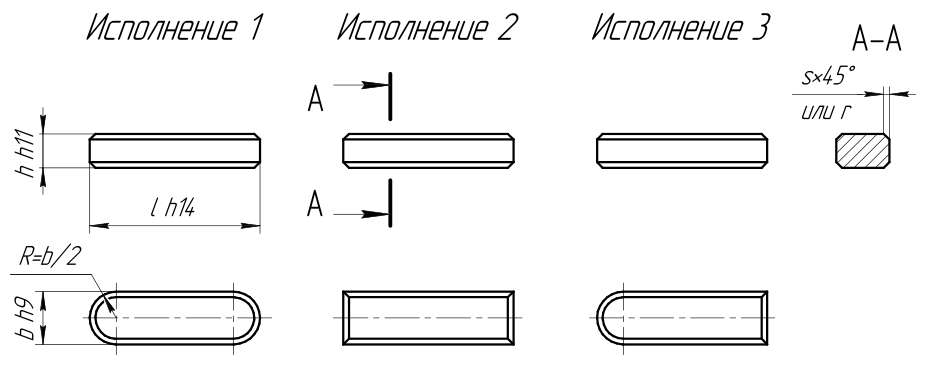
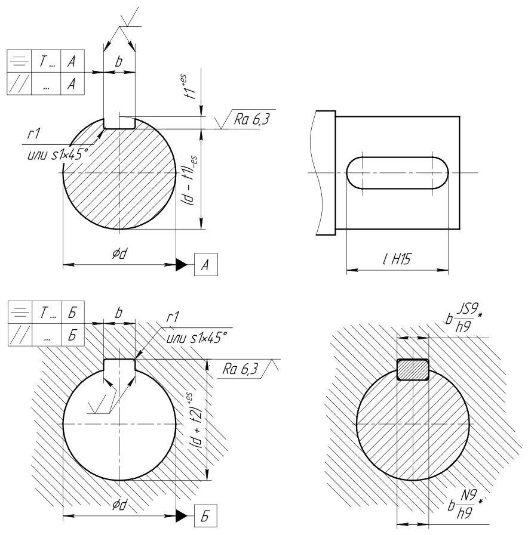

| Размеры шпонок и шпоночных пазов | |||||||||||
|---|---|---|---|---|---|---|---|---|---|---|---|
| Диаметр вала* | Ширина шпонки | Высота шпонки | Фаска шпонки | Длина шпонки минимальная | Глубина паза на валу | Глубина паза во втулке | Верхнее отклонение глубин | Скругление паза | |||
| d (свыше) | d (до) | b | h | s, r (max) | s, r (min) | l (min) | t1 | t2 | es (t1, t2) | r1, s1 (max) | r1, s1 (min) |
| >6 | 8 | 2 | 2 | 0.25 | 0.16 | 6 | 1.2 | 1 | 0.1 | 0.16 | 0.08 |
| >8 | 10 | 3 | 3 | 0.25 | 0.16 | 6 | 1.8 | 1.4 | 0.1 | 0.16 | 0.08 |
| >10 | 12 | 4 | 4 | 0.25 | 0.16 | 8 | 2.5 | 1.8 | 0.1 | 0.16 | 0.08 |
| >12 | 17 | 5 | 5 | 0.4 | 0.25 | 10 | 3 | 2.3 | 0.1 | 0.25 | 0.16 |
| >17 | 22 | 6 | 6 | 0.4 | 0.25 | 14 | 3.5 | 2.8 | 0.1 | 0.25 | 0.16 |
| >22 | 30 | 8 | 7 | 0.4 | 0.25 | 18 | 4 | 3.3 | 0.2 | 0.25 | 0.16 |
| >30 | 38 | 10 | 8 | 0.6 | 0.4 | 22 | 5 | 3.3 | 0.2 | 0.4 | 0.25 |
| >38 | 44 | 12 | 8 | 0.6 | 0.4 | 28 | 5 | 3.3 | 0.2 | 0.4 | 0.25 |
| >44 | 50 | 14 | 9 | 0.6 | 0.4 | 36 | 5.5 | 3.8 | 0.2 | 0.4 | 0.25 |
| >50 | 58 | 16 | 10 | 0.6 | 0.4 | 45 | 6 | 4.3 | 0.2 | 0.4 | 0.25 |
| >58 | 65 | 18 | 11 | 0.6 | 0.4 | 50 | 7 | 4.4 | 0.2 | 0.4 | 0.25 |
| >65 | 75 | 20 | 12 | 0.8 | 0.6 | 56 | 7.5 | 4.9 | 0.2 | 0.6 | 0.4 |
| >75 | 85 | 22 | 14 | 0.8 | 0.6 | 63 | 9 | 5.4 | 0.2 | 0.6 | 0.4 |
| >85 | 95 | 25 | 14 | 0.8 | 0.6 | 70 | 9 | 5.4 | 0.2 | 0.6 | 0.4 |
| >95 | 110 | 28 | 16 | 0.8 | 0.6 | 80 | 10 | 6.4 | 0.2 | 0.6 | 0.4 |
| >110 | 130 | 32 | 18 | 0.8 | 0.6 | 90 | 11 | 7.4 | 0.2 | 0.6 | 0.4 |
| >130 | 150 | 36 | 20 | 1.2 | 1 | 100 | 12 | 8.4 | 0.3 | 1 | 0.7 |
| >150 | 170 | 40 | 22 | 1.2 | 1 | 100 | 13 | 9.4 | 0.3 | 1 | 0.7 |
| >170 | 200 | 45 | 25 | 1.2 | 1 | 110 | 15 | 10.4 | 0.3 | 1 | 0.7 |
| >200 | 230 | 50 | 28 | 1.2 | 1 | 125 | 17 | 11.4 | 0.3 | 1 | 0.7 |
| >230 | 260 | 56 | 32 | 2 | 1.6 | 140 | 20 | 12.4 | 0.3 | 1.6 | 1.2 |
| >260 | 290 | 63 | 32 | 2 | 1.6 | 160 | 20 | 12.4 | 0.3 | 1.6 | 1.2 |
| >290 | 330 | 70 | 36 | 2 | 1.6 | 180 | 22 | 14.4 | 0.3 | 1.6 | 1.2 |
| >330 | 380 | 80 | 40 | 3 | 2.5 | 200 | 25 | 15.4 | 0.3 | 2.5 | 2 |
| >380 | 440 | 90 | 45 | 3 | 2.5 | 225 | 28 | 17.4 | 0.3 | 2.5 | 2 |
| >440 | 500 | 100 | 50 | 3 | 2.5 | 250 | 31 | 19.5 | 0.3 | 2.5 | 2 |
|
* свыше = невключительно, до = включительно. |
|||||||||||
Длины шпонок l, мм, выбираются из ряда: 6, 8, 10, 12, 14, 16, 18, 20, 22, 25, 28, 32, 36, 40, 45, 50, 56, 63, 70, 80, 90, 100, 110, 125, 140, 160, 180, 200, 220, 250, 280, 320, 360, 400, 450, 500.
| Поля допусков по ширине шпоночного паза в соединении | ||
|---|---|---|
| свободном | нормальном | плотном |
|
вал H9
втулка D10 |
вал N9
втулка JS9 |
вал P9
втулка P9 |
| единичное и серийное производство | массовое и серийное производство | направляющие шпонки |
| Для термообработанных валов допускается H11, если это не влияет на работоспособность соединения. | ||
На рабочем чертеже должен проставляться для вала размер t1 (предпочтительно) или размер (d - t1); для втулки - размер (d + t2).
Геометрические допуски шпоночного паза
Здесь Tb - допуск размера b у шпоночного паза.
Параллельность:
Tпараллельность = 1/2 Tb
Симметричность:
Tсимметричность = 2 Tb = 4 Tпараллельность
Шероховатость шпоночного паза
- у дна - Ra 6.3
-
у боковых поверхностей (размер
b):- при IT9 - Ra 3.2
- при IT10 до 18 мм - Ra 3.2
- при IT10 свыше 18 мм - Ra 6.3
Источники
- ГОСТ 23360.
- Палей М. А. и др. Допуски и посадки: Справочник: В 2 ч. Ч. 2. - 8-е изд., перераб. и доп. - СПб.: Политехника, 2001. - 608 с.: ил. - ISBN 5-7325-0514-8 (Ч. 2), ISBN 5-7325-0512-1.